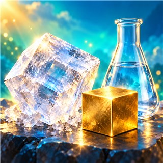
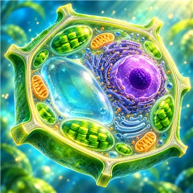
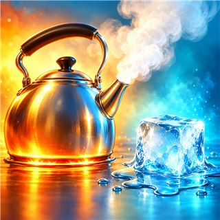
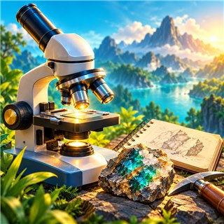
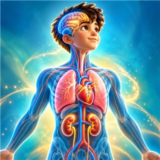
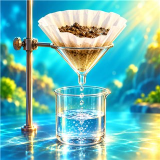
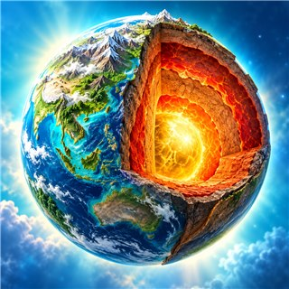
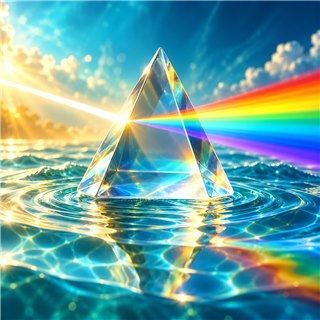
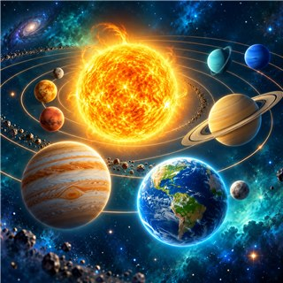
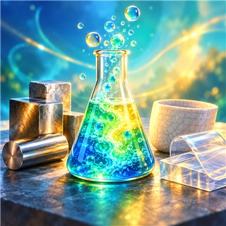

เรียนรู้วิทยาศาสตร์อย่างไร
ม.1 • หน่วย 1
ม.1 • หน่วย 1

ม.1 • หน่วย 2

ม.1 • หน่วย 3
ม.1 • หน่วย 4

ม.1 • หน่วย 5
ม.1 • หน่วย 6

ม.2 • หน่วย 1
ม.2 • หน่วย 2

ม.2 • หน่วย 3
ม.2 • หน่วย 4
ม.2 • หน่วย 5

ม.2 • หน่วย 6

ม.2 • หน่วย 7
ม.2 • หน่วย 8
ม.3 • หน่วย 1
ม.3 • หน่วย 2

ม.3 • หน่วย 3

ม.3 • หน่วย 4

ม.3 • หน่วย 5
ม.3 • หน่วย 6
ม.3 • หน่วย 7